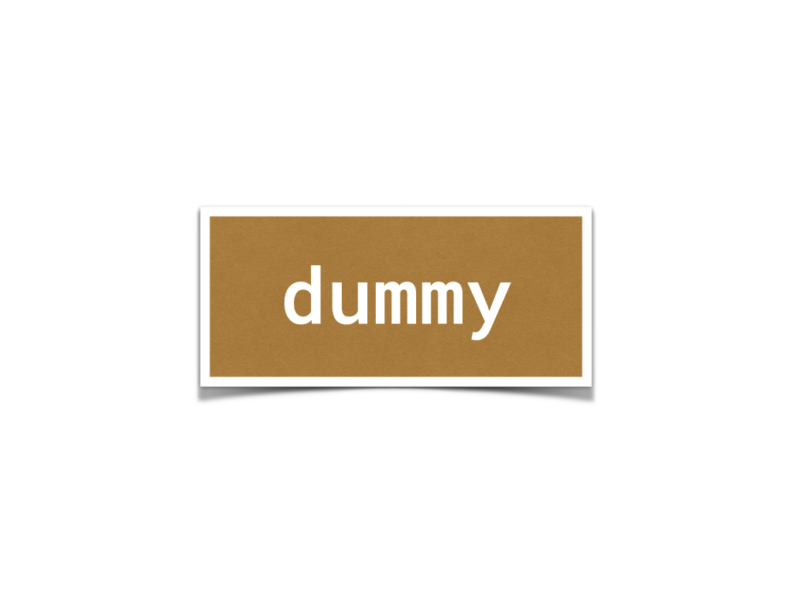

d7-9 bundle, thor, minitest
Table of Contents
prev_button up_button next_button
 |
1. HyperCardって何？
- https://ist.ksc.kwansei.ac.jp/~nishitani/Research/2026/phase_diagram_26f/canvas.html
- Markup言語
- markdown on code, jupyter notebook(.md),
- org-mode on emacs (.org)
- handoc (latex, docs, )